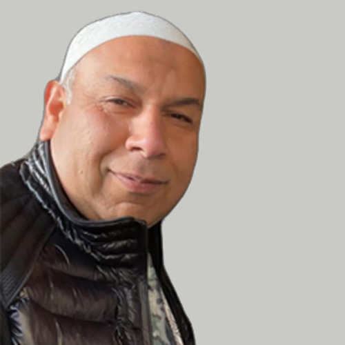

عمران نذیر
بڑے بھائی

محسن نذیر
چھوٹے بھائی
محبت، یاد اور دعا کے نام ایک خراجِ عقیدت
ہمارے پیارے بھائی عمران نذیر اور محسن نذیر حقیقی بھائی تھے۔
عمران نذیر بڑے بھائی تھے جبکہ محسن نذیر چھوٹے بھائی تھے۔ دونوں بہت محبت کرنے والے، خیال رکھنے والے اور نرم دل انسان تھے۔ ان کی محبت، شفقت، خلوص اور خوبصورت یادیں ہمیشہ ہمارے دلوں میں زندہ رہیں گی۔
عمران نذیر کو اللہ کی طرف واپس گئے ایک سال مکمل ہو چکا ہے۔
محسن نذیر کو اللہ کی طرف واپس گئے ایک سال اور ایک ماہ گزر چکا ہے۔
وقت گزر جاتا ہے، مگر اپنے پیاروں کی محبت اور ان کی یادیں ہمارے دلوں میں ہمیشہ زندہ رہتی ہیں۔
إِنَّا لِلَّهِ وَإِنَّا إِلَيْهِ رَاجِعُونَ
بے شک ہم اللہ ہی کے ہیں اور اسی کی طرف لوٹ کر جانے والے ہیں۔
سورۃ البقرہ — 2:156
اللهم اغفر لهم وارحمهم واجعل قبورهم روضة من رياض الجنة
اے اللہ! عمران نذیر اور محسن نذیر کی مغفرت فرما، ان پر رحم فرما، ان کی قبروں کو جنت کے باغوں میں سے ایک باغ بنا دے، ان کی قبروں میں نور، سکون اور راحت عطا فرما، اور انہیں جنت الفردوس میں اعلیٰ مقام عطا فرما۔
یا اللہ! ان کی نیکیوں کو قبول فرما، ان کی خطاؤں سے درگزر فرما، ان کے درجات بلند فرما اور ہمیں بھی ان سے جنت الفردوس میں ملا دے۔ آمین۔
عمران نذير
الأخ الأكبر
محسن نذير
الأخ الأصغر
ذكرى محبة ووفاء ودعاء
كان عمران نذير ومحسن نذير أخوين شقيقين حقيقيين.
كان عمران نذير الأخ الأكبر، ومحسن نذير الأخ الأصغر. كانا شخصين محبين، حريصين على من حولهما، طيبي القلب ورقيقي المشاعر. وستبقى محبتهما وطيبتهما وذكرياتهما الجميلة حية في قلوبنا دائماً.
مضى عام على وفاة عمران نذير وعودته إلى الله سبحانه وتعالى.
ومضى عام وشهر على وفاة محسن نذير وعودته إلى الله سبحانه وتعالى.
تمر الأيام، ولكن محبة من نحب وذكرياتهم الجميلة تبقى حية في القلوب.
إِنَّا لِلَّهِ وَإِنَّا إِلَيْهِ رَاجِعُونَ
إنا لله وإنا إليه راجعون.
سورة البقرة — 2:156
اللهم اغفر لهم وارحمهم واجعل قبورهم روضة من رياض الجنة
اللهم اغفر لعمران نذير ولمحسن نذير وارحمهما، واجعل قبورهما روضة من رياض الجنة، وأنر قبريهما، وآنس وحشتهما، واجعل لهما فيهما نوراً وسكينة وراحة.
اللهم ارفع درجاتهما، وتجاوز عن سيئاتهما، وأكرم نزلهما، واجمعنا بهما في الفردوس الأعلى. آمين.
عمران نذیر عمران نذير Imran Nazir
بڑے بھائی الأخ الأكبر Elder Brother
محسن نذیر محسن نذير Mohsan Nazir
چھوٹے بھائی الأخ الأصغر Younger Brother
عمران نذیر بڑے بھائی تھے اور محسن نذیر چھوٹے بھائی تھے۔ دونوں کی محبت، شفقت، خلوص اور خوبصورت یادیں ہمیشہ ہمارے دلوں میں زندہ رہیں گی۔
كان عمران نذير الأخ الأكبر ومحسن نذير الأخ الأصغر. وستبقى محبتهما وطيبتهما وذكرياتهما الجميلة حية في قلوبنا دائماً.
Imran Nazir was the elder brother and Mohsan Nazir was the younger brother. Their love, kindness, and beautiful memories will remain forever in our hearts.
إِنَّا لِلَّهِ وَإِنَّا إِلَيْهِ رَاجِعُونَ
بے شک ہم اللہ ہی کے ہیں اور اسی کی طرف لوٹ کر جانے والے ہیں۔ سورۃ البقرہ — 2:156
إنا لله وإنا إليه راجعون. سورة البقرة — 2:156
Indeed, to Allah we belong and to Him we shall return. Surah Al-Baqarah — 2:156
اللهم اغفر لهما وارحمهما واجعل قبريهما روضة من رياض الجنة، ونوّر قبريهما، وارفع درجتهما في المهديين، واجمعنا بهم في الفردوس الأعلى.
اے اللہ! عمران نذیر اور محسن نذیر کی مغفرت فرما، ان پر رحم فرما، ان کی قبروں کو جنت کے باغوں میں سے ایک باغ بنا دے، ان کے درجات بلند فرما اور ہمیں ان سے جنت الفردوس میں ملا دے۔ آمین۔
اللهم اغفر لعمران نذير ومحسن نذير وارحمهما، واجعل قبريهما روضة من رياض الجنة، وارفع درجاتهما واجمعنا بهما في الفردوس الأعلى. آمين.
O Allah, forgive Imran Nazir and Mohsan Nazir, have mercy upon them, make their graves gardens from the gardens of Paradise, raise their ranks and reunite us with them in Jannat-ul-Firdaws. Ameen.
0 زائرین نے دعا کی۔ قدّم 0 زائرين دعاءً. 0 visitors offered a dua.
یا اللہ! ان دونوں کی مغفرت فرما، ان پر رحم فرما، ان کی قبروں کو نور سے بھر دے، ان کے درجات بلند فرما، اور ہمیں جنت الفردوس میں ان کے ساتھ جمع فرما۔
اللهم اغفر لهما وارحمهما، ونوّر قبريهما، وارفع درجتهما، واجمعنا بهما في الفردوس الأعلى.
O Allah, forgive them and have mercy upon them, illuminate their graves, raise their ranks, and reunite us with them in the highest Paradise.
ان کی زندگی ختم ہو گئی، مگر ان کی محبت، شفقت اور یادیں ہمیشہ باقی رہیں گی۔ انتهت حياتهما، لكن محبتهما وطيبتهما وذكرياتهما ستبقى دائماً. Their lives have ended, but their love, kindness, and memories remain.